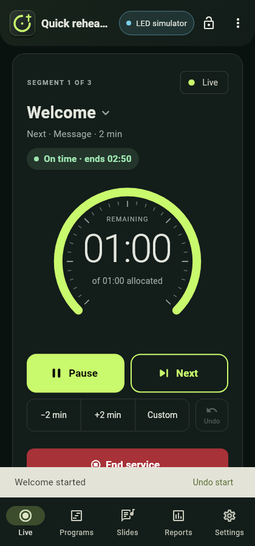

A Program is a saved plan. A service is one run of that plan. Editing a saved program prepares a future run. Adjusting a running service does not rewrite the saved program or old reports.
The app has four main destinations. On a phone they are tabs along the bottom. On a tablet or a PC they sit in a side rail, or across the top of the window, depending on the layout.
| Tab | Use it for |
|---|---|
| Live | Start and operate a service or a Quick timer, inspect output, send cues and messages, share to screens or join a service. |
| Programs | Create reusable plans, arrange segments, add speakers and private notes, choose what each program shows when it ends, keep a segment library and version history. |
| Reports | Review completed services, compare durations, add review notes, export, share and print records. |
| Settings | Church profile, appearance, desktop or tablet layout, warnings and alerts, display settings, stage cues, Quick message presets, Screens & devices, LED device management, backups, Settings PIN and About. |


The top of Live
| Part | What it does |
|---|---|
| Logo or mark, top left | Your church logo, or the built-in ring-and-cross mark. Select it to open the church profile. |
| App or service name | The loaded or running service, or Church Service Timer when none is loaded, with your church's name under it. On Programs, Reports or Settings, select either name to go straight back to Live, whether or not a service is running. Lock controls still stops it. |
| Display chip | Where the stage output is going, for example LED simulator, Stage simulator, LED sign or Stage screens. Select it to open Choose display. Choosing and connecting a display are separate from starting a service. |
| Full screen | During a service or a Quick timer, shows the stage countdown on this device's own screen. On a phone the button is under the display preview instead. See Second screen and full screen. |
| Mini timer | On a PC only, and on every page: shrinks the app to a small window that stays above your slides. See Run the service from a PC. |
| Lock | During a service, locks every control and key until you Hold to unlock. |
| ⋮ menu | Focused operator view and Ready for service. On a PC it also holds Mini timer, Full screen, Commands and Keyboard shortcuts. |
Three readings to learn first
| Reading | What it tells you |
|---|---|
| Main progress arc | The operator's current segment time, allocation and warning/overtime state. |
| Display preview | What the selected output is simulating or last acknowledged. Check its badge and any stale or "Output paused after an interruption" indication. |
| Timing status and Service timing overview | Progress against the whole plan ("On time", "45 min behind" and so on); its estimated finish can change with pauses and manual advances. Select the status line for the full overview. |
A running arc does not prove the sign is receiving updates. Likewise, Controller accepted or Stage screens received means the receiving system acknowledged data; it is not a camera view of what a person can see.
Use the labels as well as colour: normal time, warning and overtime have different meanings. In Royal Navy, the normal arc is green while the surrounding theme remains gold; warning is amber and overtime is red.
Moving around on a phone or tablet
Tap the bar, or swipe left or right anywhere on the page. Each tab keeps its place when you come back to it. While a service is loaded or running, Live stays put: leave it with the bar, and swipe back to it from any other tab. A running-service bar on the other tabs, and Return to Live on Settings pages, take you straight back. Swiping is off while the controls are locked or while programs or reports are being selected; a sideways list or slider still scrolls as before, and a swipe from the very edge of the screen is still Android Back. With reduced motion on, the new tab appears at once.
The Back key on Programs, Reports or Settings returns to Live. On Live it asks you to press Back again before leaving the app; during a service it asks for confirmation and explains that the timer keeps running.
Moving around on a PC
In a window at least 1200 wide and 600 tall, Live fills the window with a desktop layout. A new install starts in Mission control, shown below. Click a tab in the side rail or the header, or click the app or service name at the top left, or your church's name under it, to return to Live. A smaller window uses the phone and tablet layout, and so does the focused operator view. A 10-inch or larger tablet held sideways gets the same layouts; a phone never does.

The timer, cues, display preview and rundown are the same ones the phone uses, arranged for a wide screen. The layouts are described in Run the service from a PC, and the keys in Keyboard, clicker and Commands.
Three safety rules that hold everywhere
- Every timer action asks you to confirm before anything changes. That is true of a button, a key, a clicker on a PC and the Commands list.
- Lock controls blocks all input. Buttons and keys do nothing until you Hold to unlock. Locking never pauses the timer.
- Blank screen hides the output; it does not pause the service.